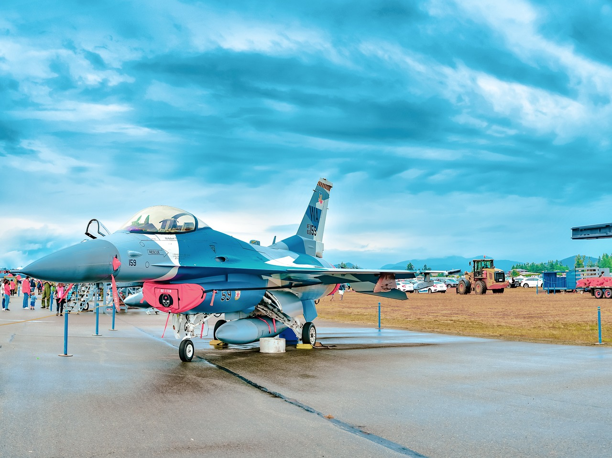

In June 1981, the Israeli Air Force carried out an extremely risky but precisely planned operation codenamed “Opera” aimed at destroying the Iraqi Osirak nuclear reactor. Eight F-16As took off from the Israeli Etzion base and flew through Saudi Arabia and Jordan, maintaining complete radio silence. To confuse potential surveillance, the Israeli pilots imitated Jordanian accents in internal communications. After almost 1,000 kilometers of flight over the desert, the F-16s began a dive on the reactor – the attack lasted only a few minutes, but it was effective: Mk-84 bombs destroyed key elements of the facility, which could have been used by Saddam Hussein to produce nuclear weapons. The entire operation, despite the enormous political and military risk, ended without any losses on the Israeli side, and its consequences reverberated around the world.
A year later, in June 1982, during Operation Peace for Galilee in the Bekaa Valley, the F-16s played a key role in the largest air battle since World War II. The Israelis launched Operation Mole Cricket 19, a complex, multi-phase campaign to destroy Syrian air defenses and aircraft. The F-16s operated in close synchronization with reconnaissance drones and F-15s, striking radar stations and engaging dozens of MiG-21s and MiG-23s. In a single day, more than 40 Syrian aircraft were shot down without any losses to themselves. The F-16s, armed with Python-3 and AIM-9L missiles, took advantage of the technological superiority, superior tactics, and situational awareness provided by Israeli reconnaissance and electronic warfare aircraft. This event confirmed their position as effective air superiority fighters.
When the Gulf War broke out in 1991, the F-16 was the backbone of the U.S. Air Force. Hundreds of them flew daily missions over Iraq—from attacking armored columns to destroying SCUD missile sites to supporting ground forces. The F-16C and D often operated in a heavy air defense environment—Iraqi SA-2, SA-3, and SA-6 systems were constantly active. During one mission, an F-16C was hit by an antiaircraft missile—the pilot, Scott Speicher, became the first American killed in the conflict, and his fate remained unknown for years. Despite this, the F-16 flew more than 13,000 combat missions, providing the backbone of the coalition’s tactical strike force.
In 1994, F-16s engaged in air combat for the first time in NATO history as part of Operation Deny Flight over Bosnia. While patrolling the no-fly zone, American F-16s encountered a formation of Serbian Jastrebi, which violated airspace and bombed civilian targets. After radio warnings that were ignored, a short, intense fight ensued. The F-16s used AIM-9 Sidewinder and AIM-120 AMRAAM missiles, shooting down several Yugoslav aircraft. This event had not only a military dimension, but also a symbolic one – NATO demonstrated its readiness to enforce UN resolutions by force.
In 2015, during tensions between Turkey and Russia in Syria, a Turkish F-16 shot down a Russian Su-24 bomber that Ankara believed had violated its airspace. The incident was unprecedented: the first time a NATO country had shot down a Russian aircraft since the Cold War. The Russian pilot ejected but was killed by opposition forces on the ground. The incident led to a major diplomatic crisis and escalated tensions in the region, and the F-16 once again found itself in the global spotlight as NATO’s primary response tool.
Źródło:Wikipedia